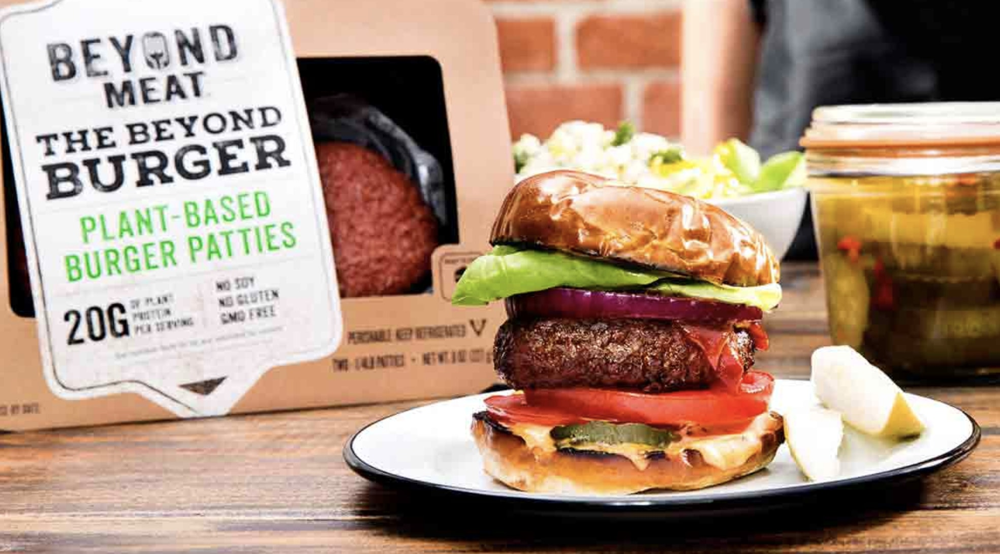
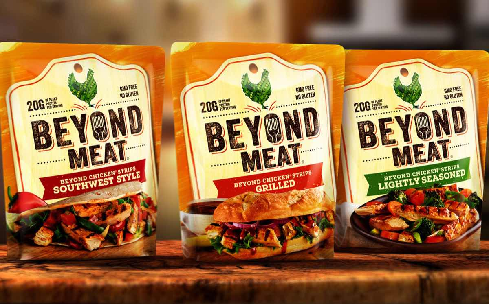

Robin Cochran
Lamda School
HTML/CSS Homework
My Favorite food is the VEGAN Beyond Burger and Chicken Strips by Beyond Meat. And the vegan 5-star restaurant called Sublime.
Sublime - Fort Lauderdale.
- Beyond Meat's Beyond Burgers

- Beyond Meat's Chicken Strips
